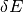
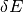
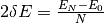
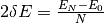
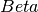
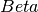

| Name | Default | Description |
|---|---|---|
| Height | 0.1 | Intensity at the origin |
| Tau | 100.0 | Relaxation time |
| Beta | 1.0 | Stretching exponent |
| Centre | 0.0 | Centre of the peak |
Provides the Fourier Transform of the Symmetrized Stretched Exponential Function integrated over each energy bin.

with  is fit function StretchedExpFT.
Quantity  is evaluated at run time. If we request to evaluate this
function over a set of energy values
is fit function StretchedExpFT.
Quantity  is evaluated at run time. If we request to evaluate this
function over a set of energy values  ,
then 
,
then 
In the picture below we evaluated function StretcheExpFT at the center of bins of width
 (label <i>center_evaluated</i>). However, one should compare the integral
of the model within each bin against experimental QENS data, because the data is a histogram.
Nevertheless, we usually compare the value that the model takes at the center of each bin instead
of the integral. This approximation is acceptable when the model does not change much
within each bin. This is specially true at high energies when StretcheExpFT is very smooth.
Sometimes this center-of-the-bin evaluation is wrong, like in the central bin [-0.2, 0.2]ueV.
The integral of in this bin is the red dot, and the value of
at the center of the bin is the black dot at the top. Very different!
This situation is likely to arise for samples with a relaxation rate
(label <i>center_evaluated</i>). However, one should compare the integral
of the model within each bin against experimental QENS data, because the data is a histogram.
Nevertheless, we usually compare the value that the model takes at the center of each bin instead
of the integral. This approximation is acceptable when the model does not change much
within each bin. This is specially true at high energies when StretcheExpFT is very smooth.
Sometimes this center-of-the-bin evaluation is wrong, like in the central bin [-0.2, 0.2]ueV.
The integral of in this bin is the red dot, and the value of
at the center of the bin is the black dot at the top. Very different!
This situation is likely to arise for samples with a relaxation rate  .
Finally, the blue line is the evaluation of
.
Finally, the blue line is the evaluation of  at each bin center, which
by design amounts to the integral of within each bin. This curve
coincides with the red dot for the central bin, as expected. Also, it agrees with the
center-of-bin evaluation of at high energies, when the center-of-the-bin
approximation is acceptable.
at each bin center, which
by design amounts to the integral of within each bin. This curve
coincides with the red dot for the central bin, as expected. Also, it agrees with the
center-of-bin evaluation of at high energies, when the center-of-the-bin
approximation is acceptable.

Note
To run these usage examples please first download the usage data, and add these to your path. In Mantid this is done using Manage User Directories.
Example - Fit to a QENS signal:
The QENS signal is modeled by the convolution of a resolution function with elastic and PrimStretchedExpFT components. Noise is modeled by a linear background:

Obtaining an initial guess close to the optimal fit is critical. For this model,
it is recommended to follow these steps:
- In the Fit Function window of MantidPlot, construct the model.
- Tie parameter  of PrimStretchedExpFT to zero, then carry out the Fit. This will result in optimized elastic line and background.
- Untie parameter of PrimStretchedExpFT and tie parameter  to 1.0, then carry out the fit. This will result in optimized model using an exponential.
- Release the tie on Beta and redo the fit.
of PrimStretchedExpFT to zero, then carry out the Fit. This will result in optimized elastic line and background.
- Untie parameter of PrimStretchedExpFT and tie parameter  to 1.0, then carry out the fit. This will result in optimized model using an exponential.
- Release the tie on Beta and redo the fit.
# Load resolution function and scattered signal
resolution = LoadNexus(Filename="resolution_14955.nxs")
qens_data = LoadNexus(Filename="qens_data_14955.nxs")
# This function_string is obtained by constructing the model
# with the Fit Function window of MantidPlot, then
# Setup--> Manage Setup --> Copy to Clipboard
function_string = "(composite=Convolution,FixResolution=true,NumDeriv=true;"
function_string += "name=TabulatedFunction,Workspace=resolution,WorkspaceIndex=0,Scaling=1,Shift=0,XScaling=1;"
function_string += "(name=DeltaFunction,Height=1,Centre=0;"
function_string += "name=PrimStretchedExpFT,Height=1.0,Tau=100,Beta=0.98,Centre=0));"
function_string += "name=LinearBackground,A0=0,A1=0"
# Carry out the fit. Produces workspaces fit_results_Parameters,
# fit_results_Workspace, and fit_results_NormalisedCovarianceMatrix.
Fit(Function=function_string,
InputWorkspace="qens_data",
WorkspaceIndex=0,
StartX=-0.15, EndX=0.15,
CreateOutput=1,
Output="fit_results")
# Collect and print parameters for PrimStrechtedExpFT
parameters_of_interest = ("Tau", "Beta")
values_found = {}
ws = mtd["fit_results_Parameters"] # Workspace containing optimized parameters
for row_index in range(ws.rowCount()):
full_parameter_name = ws.row(row_index)["Name"]
for parameter in parameters_of_interest:
if parameter in full_parameter_name:
values_found[parameter] = ws.row(row_index)["Value"]
break
if values_found["Beta"] > 0.63 and values_found["Beta"] < 0.71:
print("Beta found within [0.63, 0.71]")
if values_found["Tau"] > 54.0 and values_found["Tau"] < 60.0:
print( "Tau found within [54.0, 60.0]")
Output:
Beta found within [0.63, 0.71]
Tau found within [54.0, 60.0]
Categories: FitFunctions | QuasiElastic
Python: PrimStretchedExpFT.py (last modified: 2019-11-13)